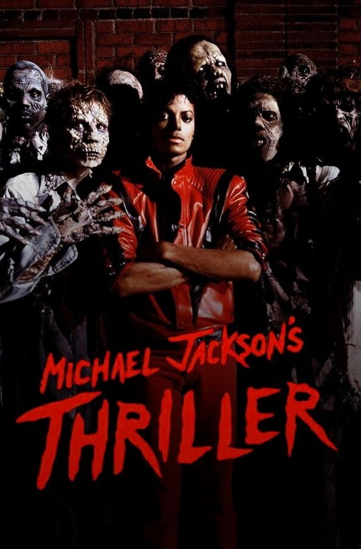
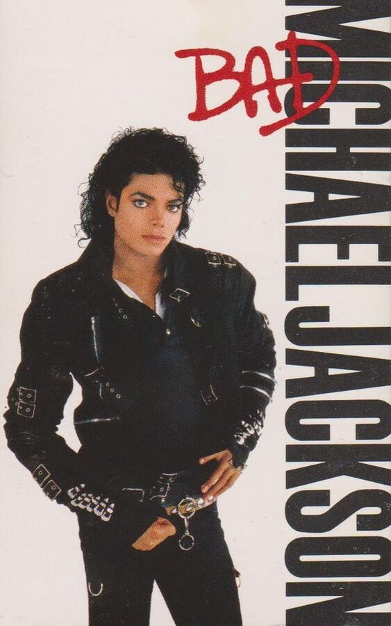
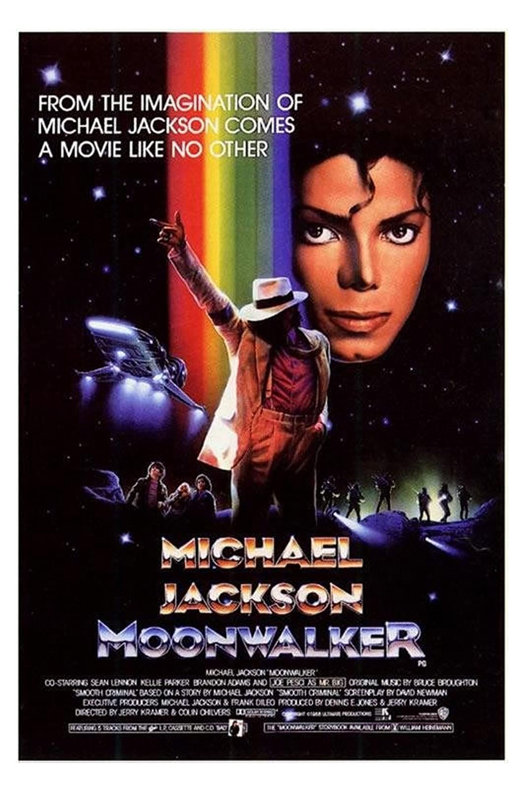
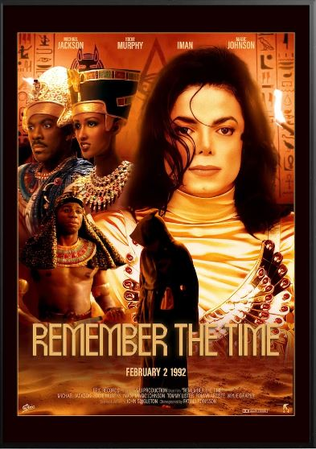
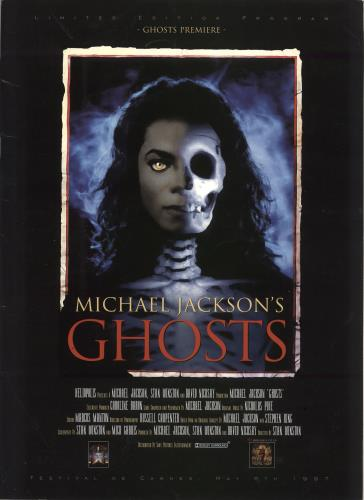
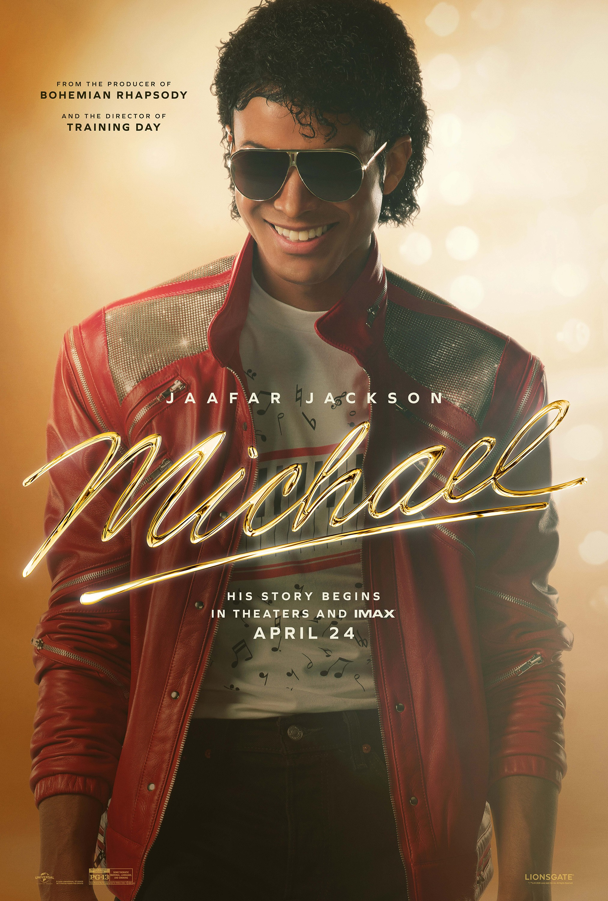

Michael sang with his breath, his accents, his silences. Listen in order, and you'll hear the voice become something more than a voice with every era.
Childhood and breakthrough. The voice of a 10-year-old that stunned grown adults. Pure Motown-pop formula — the foundation of it all.
With producer Quincy Jones, Michael first sounded like the master of his own sound. Pure disco-funk, the pull of the dance floor.
The best-selling album in history. Pop, funk, rock, and R&B in perfect balance. The moonwalk on Motown 25 — the film's key scene.
Between Thriller and Bad — the moment Michael became not just a star, but the voice of an era.
Michael the producer, the perfectionist, the master of the stage. The sound is tighter and harder. The film ends as the Bad World Tour begins.
Not on the soundtrack album, but heard in the film itself — a cappella, in the background, or over the closing credits.
Didn't make the biopic, but essential listening — late-era Michael.

A 14-minute zombie-horror musical by John Landis, with makeup by Rick Baker and narration by Vincent Price. The first music video in the U.S. National Film Registry.
▶ Watch
An 18-minute Martin Scorsese short set in the New York subway. A black-and-white opening shifts into color; a young Wesley Snipes co-stars.
▶ Watch
An anthology musical from the Bad era — the definitive "video as mini-movie" format. At its center: Smooth Criminal, with Joe Pesci and the legendary 45° lean Michael patented. This is where to start.
▶ Watch
A short film by John Singleton. Eddie Murphy plays the pharaoh, Iman the queen, with Magic Johnson on screen. Michael crumbles into sand in the finale.
▶ Watch
A nearly 40-minute musical film, written by Michael with Stephen King and directed by makeup artist Stan Winston. A "Moonwalker, extended" that few people have seen.
▶ Watch
Antoine Fuqua's feature film traces the path from the Jackson 5 to the Bad World Tour. Everything you just walked through on the timeline comes alive on screen — and every reference lands where it should.